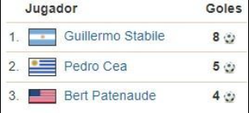

La primera edicién de la Copa del Mundo no se disputé hasta 1930. Para entonces el futbol ya era un deporte muy popular, sobre todo a raiz de que participase como disciplina amateur en los Juegos Olimpicos.
En 1928 la FIFA decidió crear un campeonato mundial para profesionales que se disputaria dos años después en una sede por decidir. Varios paises europeos presentaron su candidatura pero el por entonces presidente de la FIFA, Jules Rimet, se decidió por propuesta sudamericana que hizo Uruguay. Los charrtias corrian con todos los gastos del torneo y estaban construyendo un enorme estadio para conmemorar el Centenario de su independencia.
Ademas, Uruguay se habia constituido como una potencia futbolistica. Los celestes venian de ser campeones mundiales en los Juegos Olimpicos de 1924 y 1928, por lo que eran los principales favoritos a ganar la primera Copa Mundial.
Boicot de las selecciones europeas Pero la adjudicación de la primera Copa del Mundo al continente americano provocó una renuncia masiva de las selecciones europeas. El boicot europeo se argumentó por el largo viaje en barco que debian realizar hasta América y los costes que esto implicaba.
Finalmente, y tras las presiones de Rimet, solo 4 selecciones europeas acudieron a la cita: Francia, Belgica, Yugoslavia
En contraste con los europeos, Los paises americanos aceptaron la invitacion con entusiasmo. Argentina, Brasil, Bolivia, Chile, México, Paraguay, Perú y Estados Unidos participarian en el primer campeonato del Mundo junto con a la seleccién anfitriona. En total: 13 paises participaron en la primera Copa Mundial divididos en 4 grupos de 4 y 3 participantes.
Uruguay el primer campeon del Mundo
El torneo arrancó el 13 julio de 1930 con la victoria de Francia sobre México por 4-1 en el estadio de los de pocito Montevideo. El galo Lucien Laurent tuvo el honor de marcar el primer gol de la historia de los mundiales
Argentina, Yugoslavia, Estados Unidos y Uruguay ganaron sus respectivos grupos y accedieron las semifinales. La vispera de la final fue un paseo militar para Argentina y Uruguay, que solventaron sus partidos goleando a Estados Unidos y Yugoslavia por 6-1.
En la gran final disputada en el Estadio Centenario, Uruguay se adelanto en el marcador con tempranero gol de Dorado. Peucelle y Stabile, que fue el maximo goleador de la competicién con 8 goles, le dieron la vuelta al partido para Argentina. La albiceleste llegaba al descanso con ventaja. Pero en la segunda parte los uruguayos remontaron y cerraron una epica victoria por 4-2.
Para la historia quedará el ultimo gol de los charrúas, marcado por un jugador manco, llamado Héctor Castro. Su gol en el minuto 89 certificó el triunfo para Uruguay, que conquistaba el PRIMER CAMPEONATO DEL MUNDO DE LA HISTORIA.
LA FINAL (30/07/1930)
Uruguay: Ballesteros (portero); Nasazzi (cap), Mascheroni; Andrade, Fernandez, Gestido; Dorado, Scarone, Castro, Cea e Iriarte.
Argentina: Botasso (portero); Della Torre, Paternoster, Suárez, Evaristo; Monti, Varallo, Ferreira, Peucelle, Stábile y Evaristo.
Goles: 1-0, Dorado (min 12), 1-1, Peucelle (m. 20), 1-2 Stabile (m.37), 2-2, Cea (m.57) 3-2 Iriarte (m.68), 4-2 Castro (m.89).
Árbitro: Jean Lanfenus (Bélgica).
Estadio: Centenario de Montevideo (68.346 espectadores)
DATOS DE URUGUAY 1930 Selecciones/partidos: (13/18) Goles: 70 Media goles: 3,89 Goleadores:
Ciudades/estadios: 1. El Mundial de Uruguay ha sido el unico en jugarse en una sola ciudad, Montevideo. En principio solo se iba a usar el Estadio Centenario pero los retrasos en su construcción hicieron que también se jugara en el estadio de Pocitos y en el Parque Central.
Media de Asistencias: 24.111
Curiosidades: El trofeo de la Copa del Mundo se Ilamó originariamente Victoria. Sin embargo, més tarde se le daria el nombre de su gran valedor y seria conocida como la Copa Jules Rimet.
En Uruguay 1930 no se disputó partido de tercer y cuarto puesto pero los norteamericanos fueron terceros por la diferencia de goles. La selección de Estados Unidos estaba compuesta por ex-jugadores profesionales escoceses como John Word, James Gallacher, James Brown y Bert McGhee.
La seleccién brasileña no pudo contar con los futbolistas que disputaban el torneo paulista, que declinarion la invitacién menospreciando el campeonato. Ademas la can- arinha no podria disfrutar del mejor futbolista brasilefio de la época, Arthur Friedenreich por el mero problema étnico de no tener una piel del todo blanca.
El Balon: En el primer Mundial de la historia no hubo balón oficial y cada seleccién usaba el suyo propio. Lo habitual era que cada parte se jugaba con uno.